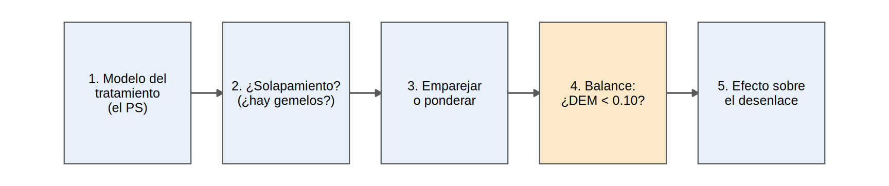

library(tidyverse)
source("R/funciones_epi.R")
source("R/funciones_extra_cap1213.R")
source("R/tabla1.R")
oraculo <- cargar_oraculo()
ckd <- observado(oraculo)¿Qué es el puntaje de propensión? Buscar al “gemelo clínico”
Nota🩺 Escenario
Una mujer de 58 años con albuminuria alta, buena TFGe y ECV tiene muchas probabilidades de que su nefrólogo le prescriba un iSGLT2. Un varón de 76 años con TFGe de 28 y poca albuminuria, muy pocas. Si comparas tratados con no tratados, estás comparando perfiles como estos. Pero si comparas a una paciente tratada con otra paciente con la misma probabilidad de ser tratada que no lo fue, esa comparación se parece mucho más a un sorteo.
La probabilidad de recibir el tratamiento, dado el perfil del paciente, se llama puntaje de propensión (propensity score, PS):
\[ e(X) = P(A = 1 \mid X) \]
Piensa en el PS como la “propensión a ser prescrito” resumida en un solo número entre 0 y 1. Rosenbaum y Rubin (1983) demostraron algo notable: dentro de pacientes con el mismo PS, los confusores medidos quedan equilibrados entre tratados y no tratados. Dos pacientes con el mismo PS son gemelos clínicos respecto a la decisión de prescribir, aunque difieran en los detalles.
Lo que vamos a hacer
- Estimar el PS con una regresión logística.
- Comprobar si hay solapamiento (¿existen gemelos para todos?).
- Verificar el balance: la prueba de fuego del PS.
El PS se usa en dos etapas: primero el diseño (modelo del tratamiento y balance, sin mirar el desenlace) y después el análisis del efecto. Este es el esquema que seguiremos en 12.3-12.5:

Si el paso 4 falla, se vuelve al paso 1 (se mejora el modelo del PS) y se repite. El desenlace no se toca hasta el paso 5: así no hay tentación de “ajustar hasta que salga el resultado deseado”.
Paso 1: decide qué variables entran
El PS se construye con los confusores que tu DAG indica. Una regla práctica:
- Sí: confusores (causas del tratamiento y del desenlace) y causas solo del desenlace (mejoran la precisión).
- No: causas solo del tratamiento (instrumentos: aumentan la varianza y pueden amplificar el sesgo), mediadores y colisionadores.
Con el paquete dagitty (no está instalado aquí) se puede pedir el conjunto de ajuste mínimo a partir del DAG:
## Con el paquete dagitty (no se ejecuta aquí)
library(dagitty)
dag <- dagitty("dag {
edad -> isglt2 ; edad -> pendiente ; tfg_basal -> isglt2 ; tfg_basal -> pendiente
uacr -> isglt2 ; uacr -> pendiente ; hba1c -> isglt2 ; hba1c -> pendiente
ecv -> isglt2 ; ecv -> pendiente ; isglt2 -> pendiente
fragilidad [unobserved] ; fragilidad -> isglt2 ; fragilidad -> pendiente
}")
adjustmentSets(dag, exposure = "isglt2", outcome = "pendiente")
## Como la fragilidad no se mide, no habrá un conjunto de ajuste válido con lo observadoPaso 2: estima el PS
Se ajusta una regresión logística del tratamiento sobre los confusores, y la probabilidad que predice para cada paciente es su PS:
formula_ps <- as.formula(paste("isglt2 ~", confusores_medidos)) # isglt2 ~ edad + sexo + hba1c + ...
modelo_ps <- glm(formula_ps, data = ckd, family = binomial)
ckd$ps <- fitted(modelo_ps) # PS de cada paciente
summary(ckd$ps) Min. 1st Qu. Median Mean 3rd Qu. Max.
0.0304 0.3100 0.4659 0.4700 0.6246 0.9648 Qué vemos: el PS va de 0.03 a 0.96, con media 0.47 (igual a la proporción de tratados, 0.47). No necesitas interpretar los coeficientes de este modelo ni medir su “ajuste”: solo importa que el PS equilibre a los grupos, como verás en el paso 4.
Paso 3: ¿hay solapamiento? (positividad)
Un PS útil necesita pacientes de ambos grupos en cada zona de PS. Si en una zona no hay tratados (o no hay no tratados), no existe gemelo para los que sí hay. Dibujamos los dos grupos “en espejo”: tratados hacia arriba y no tratados hacia abajo.
ggplot(ckd, aes(ps)) +
geom_histogram(data = filter(ckd, isglt2 == 1), aes(y = after_stat(count)), bins = 40, fill = "#0072B2", alpha = 0.8) +
geom_histogram(data = filter(ckd, isglt2 == 0), aes(y = -after_stat(count)), bins = 40, fill = "#999999", alpha = 0.8) +
geom_hline(yintercept = 0) +
scale_y_continuous(labels = abs) +
annotate("text", x = 0.02, y = c(110, -110), label = c("Inicia iSGLT2", "No inicia"), hjust = 0, size = 3.5) +
labs(x = "Puntaje de propensión (probabilidad de iniciar iSGLT2)", y = "Pacientes",
caption = "Datos simulados.") +
theme_minimal(base_size = 11)
rango_ps <- ckd |> group_by(trat) |>
summarise(minimo = min(ps), p1 = quantile(ps, 0.01), mediana = median(ps), p99 = quantile(ps, 0.99), maximo = max(ps))
rango_ps |> mutate(across(where(is.numeric), \(x) round(x, 3)))# A tibble: 2 × 6
trat minimo p1 mediana p99 maximo
<fct> <dbl> <dbl> <dbl> <dbl> <dbl>
1 No inicia 0.03 0.072 0.378 0.816 0.925
2 Inicia iSGLT2 0.034 0.14 0.568 0.914 0.965Qué vemos: los dos grupos se superponen casi por completo. Los tratados se acumulan hacia PS altos (mediana 0.57) y los no tratados hacia PS bajos (mediana 0.38), pero en casi todo el rango hay pacientes de ambos. Solo las colas son delgadas: por debajo de 0.14 casi no hay tratados y por encima de 0.82 casi no hay no tratados. Esos pacientes no tienen gemelo razonable.
Si hubiera colas largas, se restringe el análisis a la región de solapamiento (por ejemplo, PS entre 0.05 y 0.95). Se decide antes de ver el desenlace, y cambia el estimando: ahora es el efecto en la población comparable.
fuera <- sum(!between(ckd$ps, 0.05, 0.95))
c(original = nrow(ckd), excluidos_con_PS_fuera_de_0.05_0.95 = fuera) original excluidos_con_PS_fuera_de_0.05_0.95
5000 16 Aquí solo 16 pacientes quedarían fuera: no hace falta recortar. Con el paquete cobalt el mismo gráfico se obtiene así:
## Con el paquete cobalt (no se ejecuta aquí)
library(cobalt)
bal.plot(ckd, var.name = "ps", treat = "isglt2", which = "both", data = ckd, type = "histogram", mirror = TRUE)Paso 4: comprueba el balance (¿por qué funciona el PS?)
Primero, la idea. Dividimos a los pacientes en cinco grupos de PS (quintiles) y comparamos la edad media de tratados y no tratados:
ckd |>
mutate(quintil_ps = ntile(ps, 5)) |>
group_by(quintil_ps, trat) |>
summarise(edad_media = mean(edad), .groups = "drop") |>
pivot_wider(names_from = trat, values_from = edad_media) |>
mutate(diferencia = `Inicia iSGLT2` - `No inicia`, across(where(is.numeric), \(x) round(x, 1)))# A tibble: 5 × 4
quintil_ps `No inicia` `Inicia iSGLT2` diferencia
<dbl> <dbl> <dbl> <dbl>
1 1 73.7 72.6 -1.1
2 2 67.4 67.3 -0.1
3 3 63.7 63.6 -0.1
4 4 60.3 60.1 -0.2
5 5 55.4 53.9 -1.5ckd |> group_by(trat) |> summarise(edad_media = round(mean(edad), 1))# A tibble: 2 × 2
trat edad_media
<fct> <dbl>
1 No inicia 66.4
2 Inicia iSGLT2 60.8Qué vemos: en toda la muestra, los tratados son 5.6 años más jóvenes. Pero dentro de cada quintil de PS la diferencia es de 1.5 años o menos. Al comparar pacientes con PS parecido, el desequilibrio de edad casi desaparece: eso es “equilibrar con un solo número”.
Ahora lo medimos bien. La diferencia de medias estandarizada (DEM, o SMD en inglés) es la diferencia entre grupos medida en desviaciones estándar, para poder comparar variables con unidades distintas. La regla habitual es que |DEM| < 0.10 indica buen balance. Calculamos la DEM cruda (sin ajustar) con nuestra función tabla_dem():
vars <- c("edad", "hba1c", "pas", "tfg_basal", "luacr", "ecv")
dem_crudo <- tabla_dem(ckd, vars)
dem_crudo |> mutate(sin_ajustar = round(sin_ajustar, 3))# A tibble: 6 × 2
variable sin_ajustar
<chr> <dbl>
1 edad -0.578
2 hba1c 0.221
3 pas -0.041
4 tfg_basal 0.438
5 luacr 0.435
6 ecv -0.041Qué vemos: la edad (-0.58), la TFGe (0.44) y la albuminuria (0.43) superan por mucho 0.10. En 12.4 y 12.5 verás cómo desaparecen al emparejar o ponderar. El gráfico de balance (love plot) resume esto en una imagen; la función love_plot() está en R/funciones_epi.R y más adelante le pasaremos pesos para ver el “después”:
love_plot(ckd, vars)
Si prefieres una tabla tipo “Tabla 1” con la DEM al lado (la que se publica), usa tabla1(); el equivalente con el paquete tableone está debajo:
tabla1(ckd, vars = vars, grupo = "trat", binarias = "ecv", valor_p = FALSE,
etiquetas = c(edad = "Edad, años", hba1c = "HbA1c, %", pas = "PAS, mmHg", tfg_basal = "TFGe basal",
luacr = "ln(UACR)", ecv = "ECV previa")) |>
knitr::kable()| Variable | No inicia | Inicia iSGLT2 | Total | Faltantes | DEM |
|---|---|---|---|---|---|
| n | 2650 | 2350 | 5000 | ||
| Edad, años, media (DE) | 66.4 (9.6) | 60.8 (9.6) | 63.8 (10.0) | 0 | -0.58 |
| HbA1c, %, media (DE) | 7.7 (1.1) | 8.0 (1.2) | 7.8 (1.2) | 0 | 0.22 |
| PAS, mmHg, media (DE) | 135.2 (15.1) | 134.6 (15.2) | 134.9 (15.1) | 0 | -0.04 |
| TFGe basal, media (DE) | 44.1 (9.1) | 48.1 (9.4) | 46.0 (9.5) | 0 | 0.44 |
| ln(UACR), media (DE) | 4.6 (1.0) | 5.0 (1.0) | 4.8 (1.1) | 0 | 0.43 |
| ECV previa, n (%) | 747 (28.2%) | 620 (26.4%) | 1367 (27.3%) | 0 | -0.04 |
## Con el paquete tableone (no se ejecuta aquí)
library(tableone)
tab <- CreateTableOne(vars = vars, strata = "isglt2", data = ckd, test = FALSE, smd = TRUE)
print(tab, smd = TRUE)
Tip💡 Reglas para no equivocarte con el PS
- El balance importa más que la predicción. No evalúes el PS con “bondad de ajuste” ni con el AUC: un AUC alto (aquí 0.73) significa que los grupos se separan bien, o sea menos superposición, no un mejor PS.
- No uses el valor p para decidir si hay balance (depende del tamaño de muestra): usa la DEM.
- Si el balance es malo, añade no linealidad (splines, términos cuadráticos) o interacciones plausibles al modelo del PS y repite.
- Vigila la estabilidad: demasiadas variables e interacciones con pocos pacientes dan coeficientes enormes y PS cercanos a 0 o 1.
Cuatro formas de usar el PS
- Emparejamiento: cada tratado se empareja con un no tratado de PS similar (12.4).
- Ponderación (IPW): cada paciente pesa \(1/P(\text{tratamiento recibido})\) (12.5).
- Estratificación: se divide en quintiles de PS y se combinan (12.4).
- Covariable: se incluye el PS en el modelo del desenlace. No se recomienda (supone una relación lineal con el PS).
Advertencia⚠️ Lo que el PS no puede hacer
- No resuelve la confusión no medida: solo equilibra lo medido. Aquí equilibrará edad, TFGe y albuminuria, pero no la fragilidad.
- Un PS con balance excelente no demuestra ausencia de sesgo.
- Si la población no se superpone, ningún PS inventa gemelos que no existen.
Importante🎯 En resumen
- El PS es \(P(\text{tratamiento} \mid \text{confusores})\): un número que resume el perfil y equilibra los confusores medidos.
- Se estima con una logística de los confusores (no instrumentos, mediadores ni colisionadores).
- El solapamiento (histograma en espejo) es la positividad: recorta las colas antes de ver el desenlace.
- La prueba del PS es el balance (|DEM| < 0.10) después de usarlo, no el AUC.
- El PS no corrige la confusión no medida.
Ejercicio
- Agrega
ns(tfg_basal, 3)yns(luacr, 3)(paquetesplines) al modelo de PS. ¿Cambia la distribución del PS? - Excluye pacientes con PS < 0.10 o > 0.90 y recalcula las DEM crudas. ¿Mejoran?
- Repite el paso 4 con quintiles de PS, pero comparando el ln(UACR) medio de ambos grupos. ¿Se cumple la misma idea?